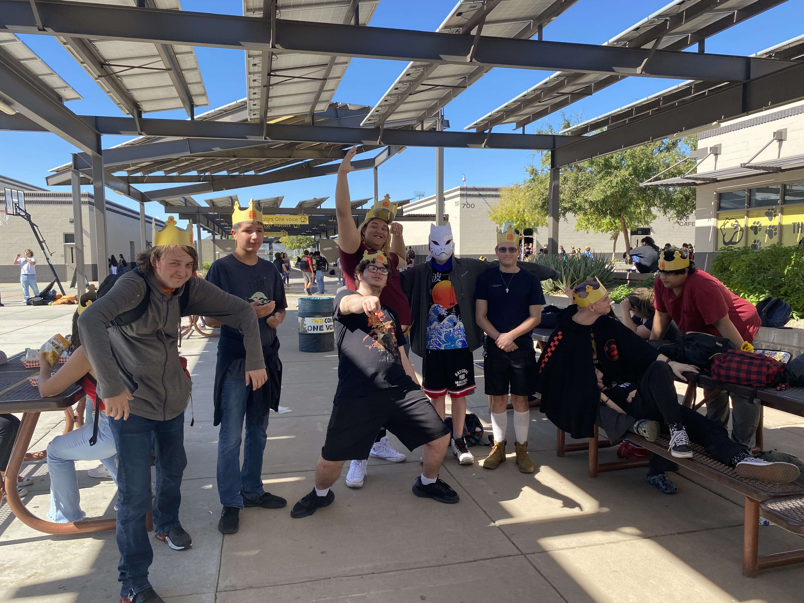

Going from left to right
Dakota: This is my buddy Dakota. Talks alot and always has a refreshing opinion on whatever he's talking about. I have seem him almost every day sophmore year and junior year i still liked to stay in touch. He's a good man, we should start talking again.
Isaiah: We kinda fell off. I feel at some point he stoped wanting to talk to me but i still invited him to things. When he moved i was sad but glad i got to know him as much as i did. He always brought a coke zero from home. We both took the SPED bus so we always got there early. No one on that bus liked talking that early in the moring but it was good enough.
My self: Too much of a nerd to fit in. NEXT
Shale: Definatly the glue of the friend group. He was funny, liked to talk and always was down to screw around. He was also the protection of the group so if something was serious he would take action with the force of 1,000 men. When he graduated the group kinda split in 2 during lunch but that was mainly because we all had different lunches. I would like to still talk to him but he doesn't like responding to my texts.
The masked man: I don't remember his name or too much about him but from what i remember he was a good time. Loved anime and always watched whatever was not mainstream. He wasn't with our group every day but i'm sure the other people in the group would have more to say about him.
Joey: Joey was great, always around, always talking, and always went out of his way to let you know if he could't make it to something. In my eyes he's great and most people would agree with me. There was this one time where we got a flat in the parking lot and himand another friend thats not in the photo spent over 2 hours helping my family fix the flat. I wont forget that.
Wyatt: Wyatt was always strange to me. Everyone loved him because he was nice and i could people respected him because of that. For me, he was distant. Almost like he didn't want to be my friend. I don't think other people could tell. But he wasn't mean to me really. Wish we became better friends but he moved when everyone else that was a senior graduated.
Nik: Honestly, Best friend materal. Talk to him just about everyday. He comes over almost every week and wre doing stuff all the time. Not much to say, we get along well and spend alot of time together.
